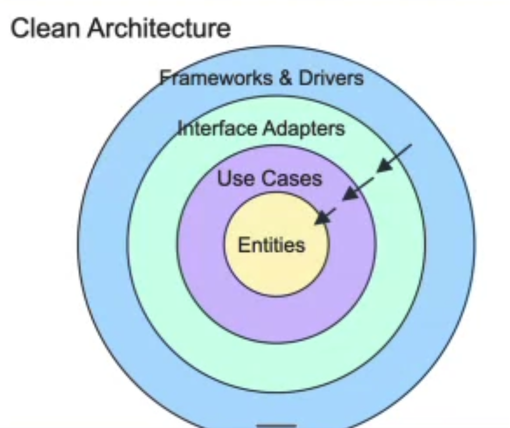

user-point 구조를 어떻게 처리해야 할까
1. 상황·예시
지금의 point는 단순 추가만 있기 때문에, 따로 테이블로 빼는 것에 대한 고민을 하였습니다.
1. user와 point 테이블을 분리
2. point테이블은 단순히, id, userId, point_balance만 있는 것을 확인
3. user테이블에 컬럼으로 추가의 과정을 거쳤습니다.
1주차, 2주차 멘토링 동안 제 질문에 대한 공통된 멘토님들의 답변은 YAGNI였습니다.
point의 기능이 추가될 것 같지만, 당장은 추가되지 않았고, 요구사항에도 없었기 때문에 user테이블의 컬럼으로 추가하였습니다.
멘토링 과정에서, 이 내용에 대한 질문을 드렸고, 멘토님께서는 user테이블의 성격과 point 컬럼의 불일치에 대해 말씀주셨습니다.
그래서 단순히 너무 기능적으로만 테이블을 생각했던 것 같아서, 테이블의 성격을 잊고 있었다는 생각이 들었고, 다시 한번 고민을 시작했습니다.
하지만, 처음에 생각한 것이 이미 머릿속에 들어왔는지, 지금 요구사항으로는 point도 user의 속성이 될 수도 있지 않을까... 라는 생각이 계속 남아있게 되었고,
'간단하게 만드는 것'과 선택과 집중을 하기로 하였고, 설계에는 정답이 없다. 틀리면 오히려 좋아. 의 마인드로 진행했습니다.
그래서 제 최종 결론은 point는 user에 남아있다... 입니다.
다음 과제를 진행하게 되면서 이 선택이 어떤 파장을 불러일으킬지는 모르겠지만, 당장의 요구사항으로 봤을 때는 이 방법도 그렇게 틀리지 않았다 라고 생각하면서 작업을 하게 된 것 같습니다.
다만...User 도메인을 만드니, 실제 user의 동작보다 point의 동작이 더 많은걸 보고, 이래서..멘토님이 이렇게 말씀주신걸까 싶었습니다.
class User private constructor(
val name: String,
state: EntityState,
balance: Long,
) {
constructor(name: String) : this(name, EntityState(), 0)
val id: Long = state.id
val createdAt: ZonedDateTime = state.createdAt
val updatedAt: ZonedDateTime = state.updatedAt
var pointBalance: PointBalance = PointBalance(balance)
private set
fun chargePoint(amount: Long) {
pointBalance = pointBalance.charge(amount)
}
fun payPoint(amount: Long) {
pointBalance = pointBalance.pay(amount)
}
fun assertCanPay(amount: Long) {
pointBalance.pay(amount)
}
companion object {
fun reconstitute(name: String, balance: Long, state: EntityState): User = User(name, state, balance)
}
}그래서 다시 AI와 논의 후...설계를 변경했습니다.
Point를 독립된 애그리거트로 분리하고, VO가 아닌 도메인으로 분리하기 위해, 결국 point용 테이블을 추가하였습니다.
다시 한번 테이블을 설계할 때는 테이블의 성격이 중요하다...는걸 다시 깨달았습니다.
class User private constructor(
val name: String,
state: EntityState,
) {
constructor(name: String) : this(name, EntityState())
val id: Long = state.id
val createdAt: ZonedDateTime = state.createdAt
val updatedAt: ZonedDateTime = state.updatedAt
companion object {
fun reconstitute(name: String, state: EntityState): User = User(name, state)
}
}
class PointAccount private constructor(
val userId: Long,
balance: Long,
) {
var balance: PointBalance = PointBalance(balance)
private set
init {
if (userId <= 0) throw CommerceException(CommerceFailure.INVALID_REQUEST)
}
fun charge(amount: Long) {
balance = balance.charge(amount)
}
fun pay(amount: Long) {
balance = balance.pay(amount)
}
fun assertCanPay(amount: Long) {
balance.pay(amount)
}
companion object {
fun open(userId: Long): PointAccount = PointAccount(userId, 0)
fun reconstitute(userId: Long, balance: Long): PointAccount = PointAccount(userId, balance)
}
}2. 판단·이유
- point_balance가 user에 속할 때,
ADR-011: 현재 포인트 잔액은 users 테이블에 저장
| 대안 | 비용 (단점·트레이드오프) | 선택 |
|---|---|---|
A. PointBalance를 Value Object로 두고 users.point_balance에 저장 |
포인트 정책이 독립적으로 성장하면 User 모델과 저장 구조를 다시 분리해야 함 | ✅ |
B. 사용자별 point_balances 테이블과 별도 Aggregate Root를 둠 |
사용자당 잔액 하나를 위해 별도 행을 두고, User와의 1:1 무결성을 따로 관리해야 함 |
A를 선택한 이유는 다음과 같습니다.
- 사용자당 현재 잔액 하나만 있고, 유효기간·적립 건·거래 이력이 없습니다.
- 잔액은 User와 생명주기가 같습니다.
- 별도 행과 1:1 무결성을 관리하지 않아도 되고, User가 자신의 잔액 행동(충전·사용)을 직접 책임집니다.
다만 포인트 원장, 포인트 종류, 유효기간, 또는 User와 독립적인 잔액 생명주기가 필요해지면 B로 분리하는 것을 다시 검토하려고 합니다.
- point를 따로 테이블로 뺏을 때
ADR-011: 포인트 잔액을 독립 PointAccount에 저장
| 대안 | 비용 (단점·트레이드오프) | 선택 |
|---|---|---|
A. PointBalance VO를 User가 소유하고 users.point_balance에 저장 (이전 선택) |
충전·사용 행동이 User에 쌓여, User가 자기 정보보다 포인트 책임을 더 많이 떠안음 | |
B. PointAccount를 별도 Aggregate Root로 두고 PointBalance VO를 그 안에 유지, point_balances.balance에 저장 |
별도 저장소가 필요하고, 계정 행이 없는 경우를 따로 처리해야 하며, 기존 users.point_balance 데이터를 옮겨야 함 |
✅ |
이전에 A를 고른 이유는 사용자당 잔액이 하나이고, 유효기간·거래 이력이 없어 단순하다는 것이었습니다.
B로 바꾼 이유는 다음과 같습니다.
- 유상 포인트의 충전·사용과 잔액 불변식은 사용자 표시명과 독립적인 책임입니다.
- User와 생명주기가 같더라도, 반드시 같은 Aggregate일 필요는 없습니다.
- 실제로 User에 잔액을 두었을 때, User의 행동 대부분이 포인트 행동이었습니다.
다만 User 생성 API가 생기면, User를 만들 때 계정도 함께 여는 방식으로 초기화를 옮기는 것을 다시 검토하려고 합니다.
개인 숙제
clean architecture

기본 개념인 '코드를 계층 구조로 구성하고, 각 계층은 특정 목적(SRP)을 갖도록 하는 것'
의존성이 안쪽으로 이동하며, 바깥쪽 레이어는 바로 아래 레이어의 의존하지만, 안쪽 레이어는 바깥쪽 레이어에 의존하지 않음
의존성 역전인 DIP는 클린 아키텍처의 핵심
- entities: 필수적인 비즈니스 규칙들의 집합
- usecase: 특정 어플리케이션에 대한 비즈니스 규칙
- interface adapter: 도메인과 인프라 사이의 변환기 역할
- infrastructure: UI, DB, framworks, device 등 I/O 구성 요소 (변동성이 가장 큰 계층)
SOLID원칙을 지켜져야, 클린 아키텍처 구성이 가능
- Single Responsibility Principle(SRP): 단일 책임 원칙 - 하나의 클래스는 변경되어야 하는 이유가 1개만 존재해야 한다.
- Open/Closed Principle(OCP): 개방-폐쇄 원칙 - 클래스나 컴포넌트에 기능을 추가할 순 있지만, 기존 기능을 수정할 필요는 없어야 한다.
-
Liskov Substitution Principle(LSP): 리스코프 치환 원칙 - 하위 레벨의 클래스가 상위 레벨의 클래스의 동작에 영향을 주지 않고 대체 가능해야 한다.
예)Java의 ArrayList와 LinkedList는 모두 List 인터페이스를 구현하므로 서로 대체 가능 - Interface Segregation Principle(ISP): 인터페이스 분리 원칙 - 클래스의 인터페이스를 사용하는 다른 클래스와 분리한다.
- Dependency Inversion Principle(DIP): 의존성 역전 원칙 - 변동성이 작은 클래스는 변동성이 큰 클래스에 의존하면 안된다.
멘토링 시간에 배웠던 DIP의 예시는
service -> repository <- JpaRepository/RedisRepository
에 대해서만 적용됐지만,
클린 아키텍처에서는
'모든 레이어의 코드 의존성은 안쪽을 향하며, 필요한 경계에서 DIP를 활용해 의존성의 방향을 지킨다.'
로 이해하면 될 것 같습니다.
클린 아키텍처를 배우기 위해선 DIP가 가장 기본이였으며, 이번 멘토링 시간에 멘토님이 시간을 할애해주시면서, DIP에 대해 너무 쉽게 설명을 해주셔서, 이해가 더 쉬웠던 것 같습니다.
짧은 회고
DIP를 코드에 대입해야 하는데, 설계에 대입해 버린 상황이였던 것 같습니다.
기능 및 구현의 편의성을 위해 설계를 바꿔버린 생각을 해버린 점이 이번 과제에서 가장 큰 실수였던 것 같습니다.
말로 설명을 하지 못하는 지식, 애매하게 아는 지식을 말로 설명할 수 있을 때 까지 공부하고 이해하는 것이 중요하다...는 것을 다시 한번 깨달았습니다.
이번 주 목표
- 설계를 해보자
- DIP에 대해 공부해보자
- layered architecture, clean architecture에 대해 공부해보자
아쉬운 점
-
기능 구현에 치우쳐 가장 중요한 테이블의 성격을 잊고 작업을 한 것 같다.
- point는 user와 기능 상으로 연결된거지, user의 속하는 데이터가 아님에도 불구하고, 기능 및 구현의 편의성을 위해 user테이블에 컬럼으로 추가한 것이 화근...